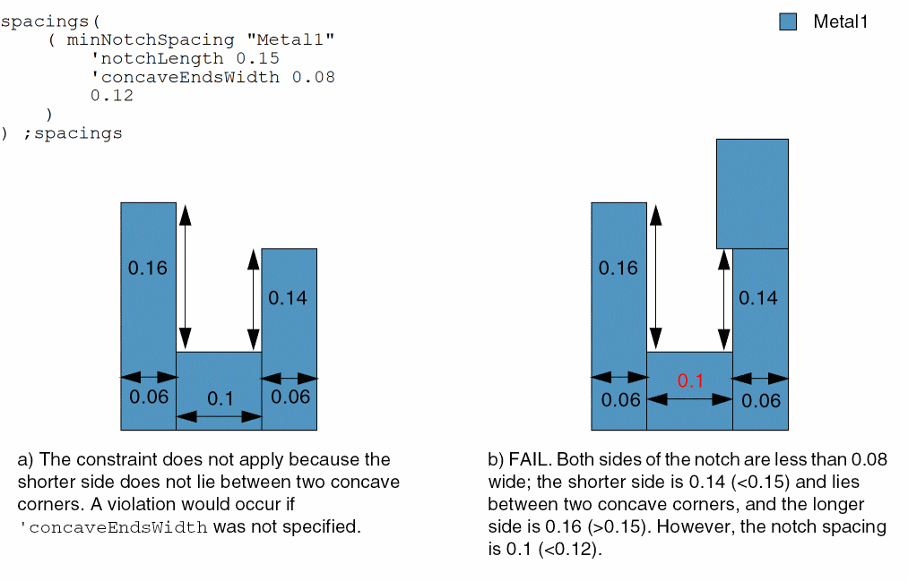
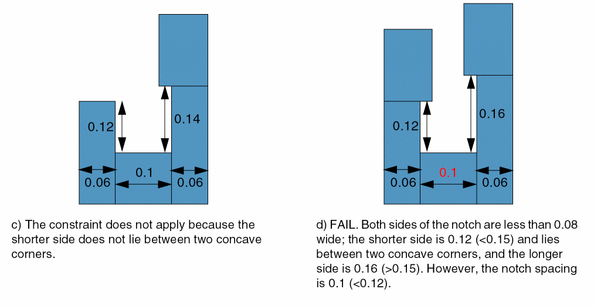
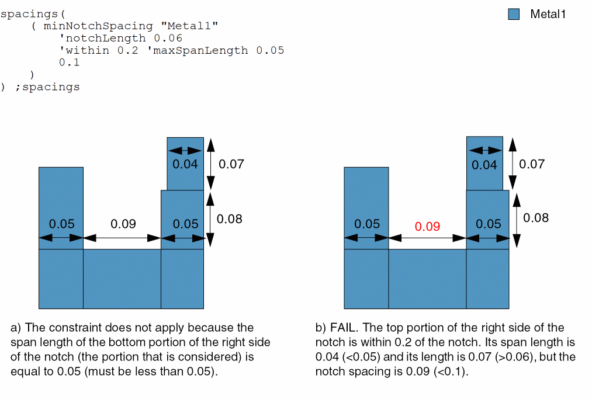
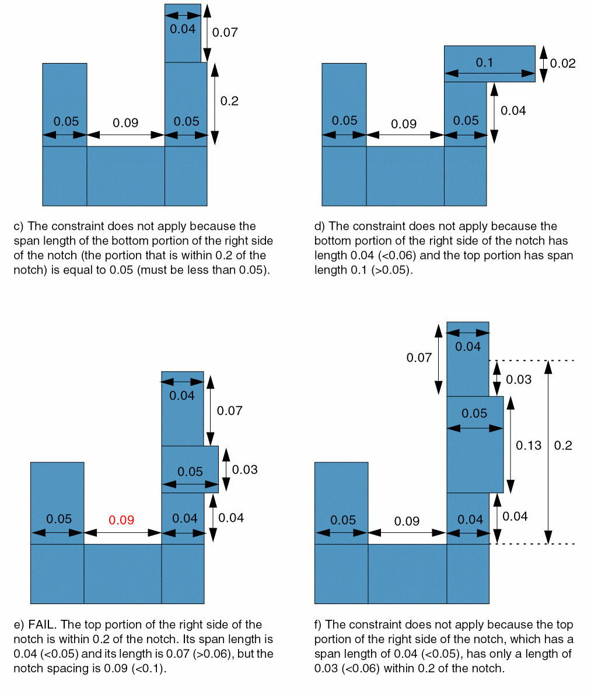

minNotchSpacing
spacings( ( minNotchSpacingtx_layer['horizontal | 'vertical] ['notchLengthf_notchLength] [['withinf_within'maxSpanLengthf_spanLength] | ['widthf_width| 'concaveEndsWidthf_concaveEndsWidth| 'betweenConcaveCorners ] ] ['notchWidthf_notchWidth] ['excludeSpacing (g_range)]f_spacing)
) ;spacings
Specifies the minimum notch spacing for a layer. This spacing value applies if the length of the shorter side of the notch is less than the specified value.
Optionally, you can also specify a range of legal notch spacings that are exempted from the check. Other optional parameters specify when the constraint applies.
Values
|
The layer on which the constraint is applied. Type: String (layer and purpose names) or Integer (layer number) |
|
Parameters
|
(Virtuoso Advanced Node for Layout Only) If this parameter is not specified, the constraint applies to all notches. When |
|
|
The constraint applies if the length of the shorter side of the notch is less than this value. If notchLength is zero, the constraint always applies, regardless of the length of the notch. |
|
|
The constraint applies only if a portion of a side of the notch with span length less than spanLength and length greater than or equal to notchLength is at a distance less than within from the notch. |
|
|
The constraint applies only if the width of at least one side of the notch is greater than or equal to this value. |
|
|
The constraint applies only if the widths of both sides of the notch are less than or equal to this value. Additionally, the length of one of the sides must be less than notchLength and this side must be between two concave corners, and the length of the opposite side must be greater than or equal to notchLength. |
|
|
The constraint applies only if the shorter of the two sides of the notch is between two concave corners. |
|
|
(Virtuoso Advanced Node for Layout Standard) The constraint applies only if the width of the notch is less than this value. |
|
|
(Virtuoso Advanced Node for Layout Only) The constraint does not apply if the notch spacing falls in this range.
Type: Floating-point values specifying a |
|
Examples
- Example 1: minNotchSpacing with notchLength
- Example 2: minNotchSpacing with notchLength and notchWidth
- Example 3: minNotchSpacing with notchLength and concaveEndsWidth
- Example 4: minNotchSpacing with notchLength, within, and maxSpanLength
- Example 5: minNotchSpacing with notchWidth and excludeSpacing
Example 1: minNotchSpacing with notchLength
The notch spacing must be at least 0.12 if the shorter side of the notch is less than 0.15 long.
Example 2: minNotchSpacing with notchLength and notchWidth
The notch spacing must be at least 0.05 if the shorter side of the notch is less than 0.09 long and the notch width is less than 0.03.
Example 3: minNotchSpacing with notchLength and concaveEndsWidth
The notch spacing must be at least 0.12 if the following conditions are met:
- Both sides of the notch are less than or equal to 0.08 wide.
-
The shorter side is less than 0.15 long and lies between two concave corners, and the longer side is greater than or equal to 0.1.

Example 4: minNotchSpacing with notchLength, within, and maxSpanLength
The notch spacing must be at least 0.1 if the following conditions are met:
- The span length of at least a portion of the side that is within 0.2 of the notch is less than 0.05.
-
The length of this portion is greater than or equal to 0.06.

Example 5: minNotchSpacing with notchWidth and excludeSpacing
The notch spacing must be at least 0.1 if the notch width is less than or equal to 0.05. The constraint does not apply if the notch spacing is greater than or equal to 0.06 and less than 0.08.
Return to top